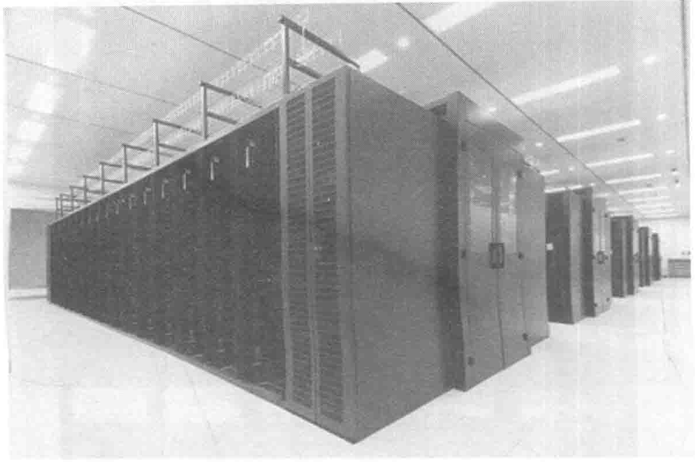
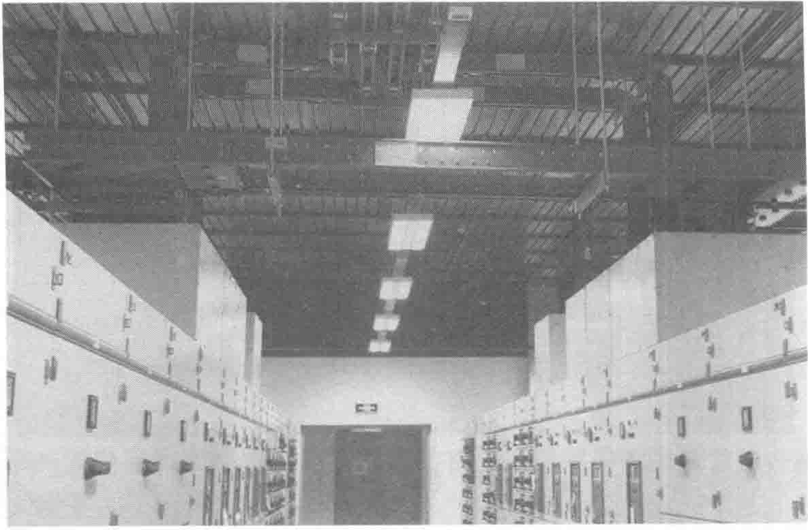

10.2.3 京东云数据中心装饰装修效果展示
主机房采用C型钢联合吊架+铝合金条形板的吊顶形式，如图10-42所示。

配电区域采用瓦楞板下无吊顶板形式，如图10-43所示。

公共走廊区域采用深灰色瓦楞彩钢板的吊顶形式，如图10-44所示。
主机房与精密空调间的隔断墙形式，如图10-45所示。
另一种主机房与精密空调间的隔断墙，如图10-46所示。
PDF第306页 · 已逐页校对
主机房采用C型钢联合吊架+铝合金条形板的吊顶形式，如图10-42所示。

配电区域采用瓦楞板下无吊顶板形式，如图10-43所示。

公共走廊区域采用深灰色瓦楞彩钢板的吊顶形式，如图10-44所示。
主机房与精密空调间的隔断墙形式，如图10-45所示。
另一种主机房与精密空调间的隔断墙，如图10-46所示。